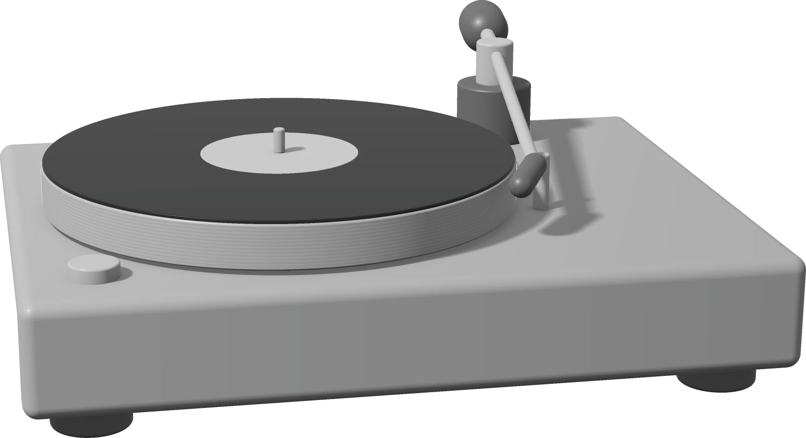
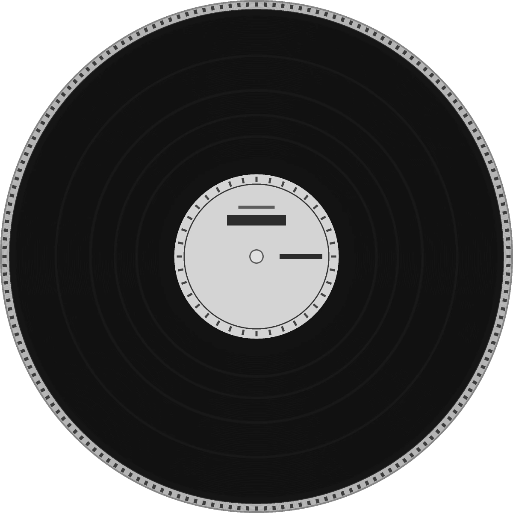

<title>VOLTA T·1</title>
<meta name="description" content="VOLTA T·1, toca-discos de tração direta com prato maciço de 4,2 kg e braço de 239,3 mm.">
<link rel="preconnect" href="https://fonts.googleapis.com">
<link rel="preconnect" href="https://fonts.gstatic.com" crossorigin>
<link rel="stylesheet" href="https://fonts.googleapis.com/css2?family=Archivo:wght@400;500;700;800;900&family=IBM+Plex+Mono:wght@400;500&display=swap">
<style>
  :root {
    --bg: #EFEFEE;
    --stage: #E4E4E2;
    --ink: #0D0D0F;
    --ink-2: #43444A;
    --soft: #6E6F76;
    --accent: #2F5BFF;
    --accent-hi: #7C97FF;
    --hair: rgba(13, 13, 15, .12);
    --hair-inv: rgba(239, 239, 238, .16);
    --display: 'Archivo', 'Helvetica Neue', Arial, sans-serif;
    --mono: 'IBM Plex Mono', ui-monospace, 'SFMono-Regular', Menlo, monospace;
    --ease: cubic-bezier(.16, 1, .3, 1);
    --gut: clamp(16px, 4vw, 56px);
    --nav: 64px;
    color-scheme: light;
  }
  * { box-sizing: border-box; }
  html { scroll-behavior: smooth; }
  body {
    margin: 0; background: var(--bg); color: var(--ink);
    font: 400 16px/1.55 var(--display); font-weight: 400;
    -webkit-font-smoothing: antialiased; overflow-x: clip;
  }
  body, p, li, dd { font-family: 'Archivo', 'Helvetica Neue', Arial, sans-serif; }
  ::selection { background: var(--ink); color: var(--bg); }
  a { color: inherit; }
  :focus-visible { outline: 2px solid var(--accent); outline-offset: 3px; }
  img { max-width: 100%; }

  /* ---------- type primitives ---------- */
  .mono {
    font-family: var(--mono); font-weight: 400; font-size: 11px;
    letter-spacing: .15em; text-transform: uppercase; line-height: 1.5;
  }
  .display { font-family: var(--display); font-weight: 800; letter-spacing: -.045em; line-height: .96; text-wrap: balance; margin: 0; }
  .h2 { font-size: clamp(32px, 4.4vw, 64px); }
  .lede { font-size: clamp(16px, 1.25vw, 18px); line-height: 1.55; color: var(--ink-2); max-width: 38ch; margin: 0; }
  .accent { color: var(--accent); }
  .wrap { padding-inline: var(--gut); max-width: 1520px; margin-inline: auto; }
  .sr { position: absolute; width: 1px; height: 1px; overflow: hidden; clip: rect(0 0 0 0); white-space: nowrap; }

  /* pinned metadata layer */
  .pin { position: absolute; z-index: 4; color: var(--soft); pointer-events: none; }
  .pin.tl { top: 20px; left: var(--gut); }
  .pin.tr { top: 20px; right: var(--gut); text-align: right; }
  .pin.bl { bottom: 20px; left: var(--gut); }
  .pin.br { bottom: 20px; right: var(--gut); text-align: right; }

  /* ---------- buttons ---------- */
  .btn {
    display: inline-flex; align-items: center; gap: 10px; height: 44px; padding: 0 22px;
    border-radius: 999px; border: 1px solid var(--ink); text-decoration: none;
    font: 500 11px/1 var(--mono); letter-spacing: .15em; text-transform: uppercase;
    transition: background-color .5s var(--ease), color .5s var(--ease), border-color .5s var(--ease);
    cursor: pointer; background: transparent; color: var(--ink);
  }
  .btn.solid { background: var(--ink); color: var(--bg); }
  .btn.solid:hover { background: transparent; color: var(--ink); }
  .btn.line:hover { background: var(--ink); color: var(--bg); }
  .btn .arr { transition: transform .6s var(--ease); }
  .btn:hover .arr { transform: translateX(4px); }

  /* ---------- nav ---------- */
  .nav {
    position: fixed; inset: 0 0 auto 0; z-index: 50; height: calc(var(--nav) + env(safe-area-inset-top, 0px));
    padding-top: env(safe-area-inset-top, 0px);
    background: color-mix(in srgb, var(--bg) 82%, transparent);
    -webkit-backdrop-filter: blur(14px); backdrop-filter: blur(14px);
    border-bottom: 1px solid var(--hair);
  }
  .nav .wrap { height: var(--nav); display: flex; align-items: center; justify-content: space-between; gap: 24px; }
  .brand { font: 800 16px/1 var(--display); letter-spacing: -.035em; text-decoration: none; display: inline-flex; align-items: baseline; }
  .brand i { width: 6px; height: 6px; border-radius: 50%; background: var(--accent); display: inline-block; margin-left: 3px; }
  .nav ul { list-style: none; margin: 0; padding: 0; display: flex; align-items: center; gap: 26px; }
  .nav ul a {
    text-decoration: none; font: 400 11px/1 var(--mono); letter-spacing: .14em; text-transform: uppercase;
    padding: 6px 0; border-bottom: 1px solid transparent; transition: border-color .4s var(--ease);
  }
  .nav ul a:hover { border-bottom-color: var(--accent); }
  .nav .btn { height: 36px; padding: 0 18px; }
  @media (max-width: 900px) { .nav ul li:not(.cta) { display: none; } }

  main { padding-top: var(--nav); }
  section { position: relative; }

  /* ---------- 01 hero ---------- */
  .hero {
    background: var(--stage); min-height: calc(100svh - var(--nav));
    overflow: clip; isolation: isolate;
    --word: clamp(88px, 20.5vw, 304px);
  }
  .hero-copy {
    position: relative; z-index: 4;
    padding-block: clamp(40px, 7vh, 88px) calc(var(--word) * .62 + 24px);
    display: flex; flex-direction: column; gap: 22px; max-width: min(46vw, 640px);
  }
  .hero .eyebrow { color: var(--ink-2); }
  .hero h1 { font-size: clamp(34px, 5.1vw, 74px); font-weight: 800; letter-spacing: -.045em; line-height: .94; }
  .hero .btns { display: flex; gap: 10px; flex-wrap: wrap; }
  .hero-spec { border-top: 1px solid var(--hair); padding-top: 14px; display: grid; gap: 4px; max-width: 420px; }
  .hero-spec div { display: flex; justify-content: space-between; gap: 16px; }
  .hero-spec b { font-weight: 500; color: var(--ink); font-variant-numeric: tabular-nums; }
  .hero-spec span { color: var(--soft); }

  /* the occlusion weave: back letters (z1) · object (z2) · front letter (z3) */
  .word-layer {
    position: absolute; left: -2.5%; width: 105%; bottom: 0;
    display: flex; justify-content: space-between;
    font: 900 var(--word)/.74 var(--display); letter-spacing: -.055em;
    color: var(--ink); user-select: none; pointer-events: none;
    transform: translateY(.10em);
    translate: 0 var(--wy, 0px);
  }
  .word-layer.back { z-index: 1; }
  .word-layer.front { z-index: 3; }
  .word-layer .off { visibility: hidden; }
  .hero-obj {
    position: absolute; z-index: 2; right: -4vw; bottom: calc(var(--word) * .30);
    width: min(58vw, 940px); height: auto;
    filter: drop-shadow(0 26px 34px rgba(13, 13, 15, .20));
    translate: 0 var(--oy, 0px);
  }
  html.js .word-layer, html.js .hero-obj { opacity: 0; transition: opacity 1.1s var(--ease), transform 1.25s var(--ease); }
  html.js .word-layer { transform: translateY(.36em); }
  html.js .hero-obj { transform: translateX(6vw); transition-delay: .12s; }
  html.js .word-layer.in { opacity: 1; transform: translateY(.10em); }
  html.js .hero-obj.in { opacity: 1; transform: none; }
  @media (max-width: 760px) {
    .hero-copy { max-width: none; padding-bottom: calc(var(--word) * .6 + 50vw); }
    .hero-obj { width: 96vw; right: -8vw; bottom: calc(var(--word) * .34); }
  }

  /* ---------- reveal ---------- */
  html.js .rv { opacity: 0; transform: translateY(28px); transition: opacity .95s var(--ease), transform 1.05s var(--ease); }
  html.js .rv.in { opacity: 1; transform: none; }

  /* ---------- 02 proof (inverted) ---------- */
  .proof { background: var(--ink); color: var(--bg); padding-block: clamp(88px, 12vw, 168px); }
  .proof .pin { color: color-mix(in srgb, var(--bg) 52%, transparent); }
  .proof .lede { color: color-mix(in srgb, var(--bg) 70%, transparent); }
  .split { display: grid; grid-template-columns: minmax(0, 5fr) minmax(0, 7fr); gap: clamp(40px, 6vw, 96px); align-items: center; }
  .split.even { grid-template-columns: minmax(0, 1fr) minmax(0, 1fr); }
  @media (max-width: 900px) { .split, .split.even { grid-template-columns: minmax(0, 1fr); } }
  .col { display: flex; flex-direction: column; gap: 22px; }
  .fig { display: flex; align-items: baseline; gap: 12px; margin-top: 12px; }
  .fig b {
    font: 900 clamp(56px, 9vw, 132px)/.84 var(--display); letter-spacing: -.05em;
    font-variant-numeric: tabular-nums;
  }
  .fig .unit { color: var(--accent-hi); }
  .proof .cap { color: color-mix(in srgb, var(--bg) 52%, transparent); max-width: 44ch; }
  .chart { width: 100%; height: auto; display: block; overflow: visible; }
  .chart text { font-family: var(--mono); font-size: 10.5px; letter-spacing: .14em; text-transform: uppercase; }
  .legend { display: flex; flex-wrap: wrap; gap: 8px 28px; margin-top: 18px; }
  .legend span { display: inline-flex; align-items: center; gap: 10px; }
  .legend i { width: 22px; height: 0; border-top: 1.5px solid; display: inline-block; }

  /* ---------- 03 sticky counter-drift ---------- */
  .spin { height: 320vh; background: var(--bg); }
  .spin-stage { position: sticky; top: 0; height: 100svh; overflow: clip; isolation: isolate; display: grid; place-items: center; }
  .marquee {
    position: absolute; z-index: 1; top: 50%; left: 0; white-space: nowrap;
    font: 900 clamp(78px, 17vw, 250px)/.8 var(--display); letter-spacing: -.05em;
    opacity: .14; translate: var(--mx, 0px) -50%; will-change: translate;
  }
  .disc { position: relative; z-index: 2; width: min(56vw, 600px); aspect-ratio: 1; max-width: 86vw; }
  .disc img { position: absolute; inset: 0; width: 100%; height: 100%; }
  .disc .rot { rotate: var(--rot, 0deg); filter: drop-shadow(0 22px 30px rgba(13, 13, 15, .22)); will-change: rotate; }
  .spin .pin.tl { top: calc(var(--nav) + 20px); }
  .spin .pin.bl, .spin .pin.br { bottom: 28px; color: var(--ink-2); }
  .spin .pin.bl b, .readout b { color: var(--ink); font-weight: 500; }
  .readout { font-variant-numeric: tabular-nums; display: grid; gap: 2px; }
  .readout .acc { color: var(--accent); }

  /* ---------- 04 geometry ---------- */
  .geo { background: var(--stage); padding-block: clamp(88px, 12vw, 168px); }
  dl.defs { margin: 8px 0 0; }
  dl.defs div {
    display: grid; grid-template-columns: 11.5em minmax(0, 1fr) auto; gap: 8px 18px; align-items: baseline;
    border-top: 1px solid var(--hair); padding: 14px 0;
  }
  dl.defs div:last-child { border-bottom: 1px solid var(--hair); }
  dl.defs dt { color: var(--accent); }
  dl.defs dd { margin: 0; color: var(--ink-2); font-size: 15px; }
  dl.defs dd.v { color: var(--ink); font-family: var(--mono); font-size: 13px; letter-spacing: .04em; text-align: right; font-variant-numeric: tabular-nums; white-space: nowrap; }
  @media (max-width: 520px) { dl.defs div { grid-template-columns: minmax(0, 1fr) auto; } dl.defs dd:not(.v) { grid-column: 1 / -1; grid-row: 2; } }
  .drawing { overflow-x: auto; }
  .drawing svg { display: block; width: 100%; min-width: 480px; height: auto; }
  .drawing text { font-family: var(--mono); font-size: 7.4px; letter-spacing: .14em; text-transform: uppercase; fill: var(--ink-2); }
  .drawing .c { fill: none; stroke: var(--ink); stroke-opacity: .28; }
  .drawing .cd { fill: none; stroke: var(--ink); stroke-opacity: .22; stroke-dasharray: 3 3; }
  .drawing .ld { fill: none; stroke: var(--ink-2); stroke-opacity: .7; }
  .drawing .arm { fill: none; stroke: var(--ink); stroke-opacity: .6; }
  .drawing .arc { fill: none; stroke: var(--ink); }
  .drawing .poi { fill: var(--accent); }
  .drawing .ring { fill: var(--stage); stroke: var(--accent); }
  html.js .draw .arc { stroke-dasharray: 1; stroke-dashoffset: 1; transition: stroke-dashoffset 2.2s var(--ease) .2s; }
  html.js .draw.in .arc { stroke-dashoffset: 0; }

  /* ---------- 05 finish swap ---------- */
  .finish {
    --f-bg: #EFEFEE; --f-ink: #0D0D0F;
    background-color: var(--f-bg); color: var(--f-ink);
    transition: background-color .7s var(--ease), color .7s var(--ease);
    padding-block: clamp(88px, 12vw, 168px);
  }
  .finish .pin { color: color-mix(in srgb, var(--f-ink) 58%, transparent); }
  .finish .lede { color: color-mix(in srgb, var(--f-ink) 74%, transparent); }
  .finish .top { display: flex; justify-content: space-between; align-items: end; gap: 32px; flex-wrap: wrap; }
  .swatches { display: flex; gap: 8px; flex-wrap: wrap; margin-top: 44px; }
  .swatches button {
    height: 40px; padding: 0 18px; border-radius: 999px; background: transparent; color: inherit;
    border: 1px solid color-mix(in srgb, currentColor 32%, transparent);
    font: 400 11px/1 var(--mono); letter-spacing: .14em; text-transform: uppercase; cursor: pointer;
    display: inline-flex; align-items: center; gap: 10px;
    transition: border-color .4s var(--ease);
  }
  .swatches button i { width: 10px; height: 10px; border-radius: 50%; border: 1px solid color-mix(in srgb, currentColor 45%, transparent); }
  .swatches button:hover { border-color: currentColor; }
  .swatches button[aria-pressed="true"] { border-color: currentColor; box-shadow: inset 0 0 0 1px currentColor; }
  .panel { display: grid; grid-template-columns: repeat(3, minmax(0, 1fr)); margin-top: 28px; }
  .panel > div {
    padding: 22px 22px 26px 0; display: grid; gap: 14px; align-content: start;
    border-top: 1px solid color-mix(in srgb, currentColor 24%, transparent);
    border-bottom: 1px solid color-mix(in srgb, currentColor 24%, transparent);
  }
  .panel > div + div { padding-left: 22px; border-left: 1px solid color-mix(in srgb, currentColor 24%, transparent); }
  .panel .k { color: color-mix(in srgb, currentColor 62%, transparent); }
  .panel .val { font: 800 clamp(22px, 2.4vw, 34px)/1.02 var(--display); letter-spacing: -.035em; }
  @media (max-width: 760px) {
    .panel { grid-template-columns: minmax(0, 1fr); }
    .panel > div + div { padding-left: 0; border-left: 0; border-top: 0; }
  }

  /* ---------- 06 spec table ---------- */
  .specs { background: var(--stage); padding-block: clamp(88px, 12vw, 168px); }
  .specs .head { display: flex; justify-content: space-between; align-items: end; gap: 24px; flex-wrap: wrap; margin-bottom: 44px; }
  .table { display: grid; grid-template-columns: repeat(2, minmax(0, 1fr)); column-gap: clamp(28px, 5vw, 80px); }
  .table ul { list-style: none; margin: 0; padding: 0; }
  .table li { display: flex; justify-content: space-between; gap: 24px; padding: 15px 0; border-top: 1px solid var(--hair); align-items: baseline; }
  .table li:last-child { border-bottom: 1px solid var(--hair); }
  .table li span { color: var(--ink-2); }
  .table li b { font: 500 13px/1.4 var(--mono); letter-spacing: .04em; font-variant-numeric: tabular-nums; text-align: right; }
  @media (max-width: 760px) { .table { grid-template-columns: minmax(0, 1fr); } .table ul + ul li:first-child { border-top: 0; } .table ul:first-child li:last-child { border-bottom: 0; } }

  /* ---------- 07 closing ---------- */
  .close { background: var(--bg); padding-top: clamp(88px, 12vw, 168px); overflow: clip; }
  .close .row { display: flex; justify-content: space-between; align-items: end; gap: 32px; flex-wrap: wrap; }
  .close .display { font-size: clamp(40px, 6.4vw, 96px); max-width: 12ch; }
  .close .small { color: var(--soft); margin-top: 22px; }
  .close .btns { display: flex; gap: 10px; flex-wrap: wrap; }
  .foot { display: flex; gap: 12px 36px; flex-wrap: wrap; border-top: 1px solid var(--hair); margin-top: clamp(64px, 9vw, 120px); padding-top: 18px; color: var(--ink-2); }
  .foot span:last-child { margin-left: auto; }
  .endword {
    font: 900 clamp(84px, 19.5vw, 300px)/.74 var(--display); letter-spacing: -.055em;
    display: flex; justify-content: space-between; width: 105%; margin-left: -2.5%;
    margin-top: clamp(24px, 4vw, 56px); transform: translateY(.19em); user-select: none;
  }

  @media (prefers-reduced-motion: reduce) { html { scroll-behavior: auto; } }
</style>

<header class="nav">
  <div class="wrap">
    <a class="brand" href="#topo" aria-label="VOLTA, início">VOLTA<i></i></a>
    <nav aria-label="Seções">
      <ul>
        <li><a href="#estabilidade">Estabilidade</a></li>
        <li><a href="#prato">Prato</a></li>
        <li><a href="#geometria">Geometria</a></li>
        <li><a href="#acabamentos">Acabamentos</a></li>
        <li><a href="#especificacoes">Especificações</a></li>
        <li class="cta"><a class="btn solid" href="#reservar">Reservar</a></li>
      </ul>
    </nav>
  </div>
</header>

<main id="topo">
  <!-- 01 · HERO ─────────────────────────────────────────── -->
  <section class="hero" aria-labelledby="h-hero">
    <div class="wrap">
      <div class="hero-copy">
        <p class="mono eyebrow">Toca-discos de tração direta · VT1</p>
        <h1 id="h-hero" class="display">Trinta e três rotações e um terço, <span class="accent">sem desvio.</span></h1>
        <p class="lede">Motor direto sem escovas, prato de alumínio maciço de 4,2&nbsp;kg e um braço calculado para dois pontos nulos. Cada número desta página foi medido.</p>
        <div class="btns">
          <a class="btn solid" href="#reservar">Reservar <span class="arr" aria-hidden="true">→</span></a>
          <a class="btn line" href="#estabilidade">Ver a medição</a>
        </div>
        <div class="hero-spec mono">
          <div><span>Wow &amp; flutter</span><b>0,018 % WRMS</b></div>
          <div><span>Desvio de velocidade</span><b>±0,01 %</b></div>
          <div><span>Braço, efetivo</span><b>239,3 mm</b></div>
        </div>
      </div>
    </div>
    <div class="word-layer back" aria-hidden="true"><span>V</span><span>O</span><span>L</span><span class="off">T</span><span>A</span></div>
    
    <div class="word-layer front" aria-hidden="true"><span class="off">V</span><span class="off">O</span><span class="off">L</span><span>T</span><span class="off">A</span></div>
  </section>

  <!-- 02 · PROOF ────────────────────────────────────────── -->
  <section class="proof" id="estabilidade" aria-labelledby="h-proof">
    <p class="pin tl mono">Estabilidade</p>
    <p class="pin tr mono">Fig. A · desvio instantâneo, 33⅓ rpm</p>
    <div class="wrap split">
      <div class="col rv">
        <h2 id="h-proof" class="display h2">A velocidade fica onde deve ficar.</h2>
        <p class="lede">O motor lê a posição do prato 1.000 vezes por volta e corrige antes que o ouvido perceba. As duas curvas ao lado estão na mesma escala.</p>
        <div class="fig"><b id="fig-wf">0,018</b><span class="mono unit">% WRMS</span></div>
        <p class="mono cap">Wow &amp; flutter ponderado, IEC 60386, disco de teste 3.150&nbsp;Hz</p>
      </div>
      <figure class="rv" style="margin:0">
        <svg class="chart" id="chart" viewBox="0 0 640 400" role="img" aria-labelledby="chart-t">
          <title id="chart-t">Desvio de velocidade em 2 segundos: referência com 0,10 % RMS oscila; VOLTA T·1 com 0,018 % RMS permanece quase plana.</title>
        </svg>
        <figcaption class="legend mono">
          <span style="color:color-mix(in srgb, var(--bg) 60%, transparent)"><i></i>Referência · 0,10 % RMS</span>
          <span style="color:var(--accent-hi)"><i></i>VOLTA T·1 · <span id="rms-read">0,018</span> % RMS</span>
        </figcaption>
      </figure>
    </div>
  </section>

  <!-- 03 · STICKY COUNTER-DRIFT ────────────────────────── -->
  <section class="spin" id="prato" aria-labelledby="h-spin">
    <div class="spin-stage">
      <div class="marquee" aria-hidden="true">PRATO MACIÇO&nbsp; PRATO MACIÇO&nbsp; PRATO MACIÇO</div>
      <div class="disc">
        
        
      </div>
      <p class="pin tl mono">Prato · vista superior</p>
      <div class="pin bl mono">
        <h2 id="h-spin" class="sr">Prato maciço</h2>
        <div><b>Prato maciço</b></div>
        <div>Alumínio 6061 · 4,2 kg · Ø 300 mm</div>
      </div>
      <div class="pin br mono readout" aria-live="off">
        <div>Ângulo <b id="ro-deg">0000,0°</b></div>
        <div>Voltas <b id="ro-rev">0,000</b></div>
        <div class="acc">t @ 33⅓ rpm <span id="ro-t">0,00</span> s</div>
      </div>
    </div>
  </section>

  <!-- 04 · GEOMETRY ─────────────────────────────────────── -->
  <section class="geo" id="geometria" aria-labelledby="h-geo">
    <p class="pin tl mono">Geometria do braço</p>
    <p class="pin tr mono">Fig. B · escala 1 : 1 em mm</p>
    <div class="wrap split even">
      <div class="col rv">
        <h2 id="h-geo" class="display h2">Dois pontos onde o erro é zero.</h2>
        <p class="lede">O braço é montado para o alinhamento Baerwald nos raios de gravação IEC. A agulha fica tangente ao sulco em 66,0 e 120,9&nbsp;mm do centro, e o erro entre eles fica abaixo de 0,7°.</p>
        <dl class="defs">
          <div><dt class="mono">Efetivo</dt><dd>Do pivô à ponta da agulha</dd><dd class="v" data-k="L">239,3 mm</dd></div>
          <div><dt class="mono">Montagem</dt><dd>Do pivô ao eixo do prato</dd><dd class="v" data-k="D">222,0 mm</dd></div>
          <div><dt class="mono">Overhang</dt><dd>Quanto a agulha passa do eixo</dd><dd class="v" data-k="oh">17,3 mm</dd></div>
          <div><dt class="mono">Offset</dt><dd>Ângulo da cápsula em relação ao braço</dd><dd class="v" data-k="beta">22,99°</dd></div>
          <div><dt class="mono">Nulos</dt><dd>Raios de erro zero</dd><dd class="v" data-k="nulls">66,0 · 120,9 mm</dd></div>
        </dl>
      </div>
      <figure class="drawing draw rv" id="drawing" style="margin:0">
        <svg id="geo-svg" viewBox="-250 -215 530 400" role="img" aria-labelledby="geo-t">
          <title id="geo-t">Vista superior em escala: prato de 150 mm de raio, pivô a 222,0 mm do eixo, arco da agulha de 239,3 mm cruzando os raios nulos de 66,0 e 120,9 mm.</title>
        </svg>
      </figure>
    </div>
  </section>

  <!-- 05 · FINISH SWAP ─────────────────────────────────── -->
  <section class="finish" id="acabamentos" aria-labelledby="h-fin">
    <p class="pin tl mono">Acabamentos</p>
    <p class="pin tr mono" id="fin-code">AL-N · anodizado natural</p>
    <div class="wrap">
      <div class="top rv">
        <h2 id="h-fin" class="display h2" style="max-width:14ch">Um bloco usinado, quatro superfícies.</h2>
        <p class="lede">O chassi sai de um único tarugo de alumínio. Escolha o acabamento e o campo inteiro assume o tom.</p>
      </div>
      <div class="swatches rv" role="group" aria-label="Acabamento">
        <button type="button" id="fin-al" aria-pressed="true" data-bg="#EFEFEE" data-ink="#0D0D0F" data-code="AL-N · anodizado natural" data-name="Alumínio natural" data-treat="Anodização tipo II, selada" data-thick="15 µm"><i style="background:#D8D8D6"></i>Alumínio</button>
        <button type="button" id="fin-gr" aria-pressed="false" data-bg="#2A2B2F" data-ink="#EFEFEE" data-code="GR-A · anodizado grafite" data-name="Grafite" data-treat="Anodização tipo II, tingida" data-thick="18 µm"><i style="background:#2A2B2F"></i>Grafite</button>
        <button type="button" id="fin-ar" aria-pressed="false" data-bg="#D9D4C8" data-ink="#1A1915" data-code="AR-J · jateado areia" data-name="Areia" data-treat="Jateamento de vidro + anodização" data-thick="15 µm"><i style="background:#C9C2B2"></i>Areia</button>
        <button type="button" id="fin-pt" aria-pressed="false" data-bg="#0D0D0F" data-ink="#EFEFEE" data-code="PT-F · preto fosco" data-name="Preto fosco" data-treat="Anodização dura, tipo III" data-thick="40 µm"><i style="background:#0D0D0F"></i>Preto</button>
      </div>
      <div class="panel rv" aria-live="polite">
        <div><span class="mono k">Acabamento</span><span class="val" id="p-name">Alumínio natural</span></div>
        <div><span class="mono k">Tratamento</span><span class="val" id="p-treat">Anodização tipo II, selada</span></div>
        <div><span class="mono k">Camada</span><span class="val" id="p-thick">15 µm</span></div>
      </div>
    </div>
  </section>

  <!-- 06 · SPEC TABLE ──────────────────────────────────── -->
  <section class="specs" id="especificacoes" aria-labelledby="h-spec">
    <p class="pin tl mono">Especificações</p>
    <p class="pin tr mono">Ficha VT1 · rev. 09.2026</p>
    <div class="wrap">
      <div class="head rv">
        <h2 id="h-spec" class="display h2">Ficha técnica.</h2>
        <p class="mono" style="color:var(--soft);margin:0">Valores medidos na unidade de referência</p>
      </div>
      <div class="table rv">
        <ul>
          <li><span>Tração</span><b>Direta, sem escovas</b></li>
          <li><span>Velocidades</span><b>33⅓ · 45 rpm</b></li>
          <li><span>Desvio de velocidade</span><b>±0,01 %</b></li>
          <li><span>Wow &amp; flutter</span><b>0,018 % WRMS</b></li>
          <li><span>Rumble</span><b>−78 dB (DIN B)</b></li>
          <li><span>Partida até 33⅓</span><b>0,7 s</b></li>
        </ul>
        <ul>
          <li><span>Prato</span><b>Al 6061 · 4,2 kg · Ø 300 mm</b></li>
          <li><span>Braço, efetivo</span><b>239,3 mm</b></li>
          <li><span>Overhang</span><b>17,3 mm</b></li>
          <li><span>Massa efetiva do braço</span><b>12 g</b></li>
          <li><span>Dimensões (L × A × P)</span><b>460 × 88 × 360 mm</b></li>
          <li><span>Massa total</span><b>11,8 kg</b></li>
        </ul>
      </div>
    </div>
  </section>

  <!-- 07 · CLOSING ─────────────────────────────────────── -->
  <section class="close" id="reservar" aria-labelledby="h-close">
    <div class="wrap">
      <div class="row rv">
        <div>
          <h2 id="h-close" class="display">Coloque um disco. Deixe girar.</h2>
          <p class="mono small">Lote 01 · envio a partir de março de 2027</p>
        </div>
        <div class="btns">
          <a class="btn solid" href="#topo">Reservar a sua <span class="arr" aria-hidden="true">→</span></a>
          <a class="btn line" href="#especificacoes">Rever a ficha</a>
        </div>
      </div>
      <div class="foot mono">
        <span>VOLTA Áudio</span>
        <span>São Paulo · BR</span>
        <span>Ref. VT1-2026</span>
        <span>© 2026</span>
      </div>
    </div>
    <div class="endword" aria-hidden="true"><span>V</span><span>O</span><span>L</span><span>T</span><span>A</span></div>
  </section>
</main>

<script>
(() => {
  const root = document.documentElement;
  const reduce = window.matchMedia('(prefers-reduced-motion: reduce)').matches;
  if (!reduce) root.classList.add('js');
  const NS = 'http://www.w3.org/2000/svg';
  const el = (tag, attrs, parent) => {
    const n = document.createElementNS(NS, tag);
    for (const k in attrs) n.setAttribute(k, attrs[k]);
    if (parent) parent.appendChild(n);
    return n;
  };
  const br = (x, d) => x.toFixed(d).replace('.', ',');

  /* ---------- Fig. A: two traces from sums of sines, scaled to their RMS ---------- */
  const chart = document.getElementById('chart');
  const X0 = 64, X1 = 624, Y_MID = 190, Y_HALF = 160, RANGE = 0.30; // ±0.30 %
  const T = 2, N = 800;
  const yOf = v => Y_MID - v / RANGE * Y_HALF;
  const xOf = t => X0 + t / T * (X1 - X0);
  function trace(terms, targetRms) {
    const raw = [];
    for (let i = 0; i <= N; i++) {
      const t = i / N * T;
      raw.push(terms.reduce((s, [a, f, p]) => s + a * Math.sin(2 * Math.PI * f * t + p), 0));
    }
    const rms = Math.sqrt(raw.reduce((s, v) => s + v * v, 0) / raw.length);
    return raw.map(v => v * targetRms / rms);
  }
  // once-per-revolution (0.556 Hz at 33⅓) plus drive and bearing components
  const ref = trace([[1, 0.5556, 0.3], [0.55, 4.1, 1.2], [0.32, 11.3, 2.0], [0.18, 23.7, 0.6]], 0.10);
  const vt1 = trace([[0.4, 0.5556, 1.1], [0.8, 8.2, 0.2], [0.5, 23.7, 2.4], [0.3, 47.1, 1.7]], 0.018);
  const pathOf = vals => vals.map((v, i) => (i ? 'L' : 'M') + xOf(i / N * T).toFixed(2) + ' ' + yOf(v).toFixed(3)).join('');
  const inv = 'rgba(239,239,238,';
  // axis: ticks only, hairline zero line
  for (const v of [-0.3, -0.15, 0, 0.15, 0.3]) {
    el('line', { x1: X0 - 6, x2: v === 0 ? X1 : X0, y1: yOf(v), y2: yOf(v), stroke: inv + (v === 0 ? '.22)' : '.35)'), 'stroke-width': 1, 'shape-rendering': 'crispEdges' }, chart);
    const tx = el('text', { x: X0 - 12, y: yOf(v) + 3.5, 'text-anchor': 'end', fill: inv + '.55)' }, chart);
    tx.textContent = (v > 0 ? '+' : v < 0 ? '−' : '') + br(Math.abs(v), 2);
  }
  el('line', { x1: X0, x2: X0, y1: yOf(0.3), y2: yOf(-0.3), stroke: inv + '.35)', 'stroke-width': 1 }, chart);
  for (let s = 0; s <= T; s += 0.5) {
    el('line', { x1: xOf(s), x2: xOf(s), y1: yOf(-0.3) + 8, y2: yOf(-0.3) + 14, stroke: inv + '.35)' }, chart);
    const tx = el('text', { x: xOf(s), y: yOf(-0.3) + 30, 'text-anchor': 'middle', fill: inv + '.55)' }, chart);
    tx.textContent = br(s, 1) + ' s';
  }
  const yl = el('text', { x: X0 - 12, y: yOf(0.3) - 16, 'text-anchor': 'end', fill: inv + '.55)' }, chart);
  yl.textContent = '%';
  const pRef = el('path', { d: pathOf(ref), fill: 'none', stroke: inv + '.62)', 'stroke-width': 1.25, 'stroke-linejoin': 'round' }, chart);
  const pVt = el('path', { d: pathOf(vt1), fill: 'none', stroke: '#7C97FF', 'stroke-width': 2, 'stroke-linejoin': 'round' }, chart);
  // verify: read the drawn geometry back and recover the RMS the figure claims
  const rmsFromPath = p => {
    const ys = p.getAttribute('d').split(/[ML]/).filter(Boolean).map(s => +s.split(' ')[1]);
    const vals = ys.map(y => (Y_MID - y) / Y_HALF * RANGE);
    return Math.sqrt(vals.reduce((s, v) => s + v * v, 0) / vals.length);
  };
  const rRef = rmsFromPath(pRef), rVt = rmsFromPath(pVt);
  const figClaim = parseFloat(document.getElementById('fig-wf').textContent.replace(',', '.'));
  chart.dataset.rmsRef = rRef.toFixed(5);
  chart.dataset.rmsVt1 = rVt.toFixed(5);
  chart.dataset.verified = String(Math.abs(rVt - figClaim) < 5e-5 && Math.abs(rRef - 0.10) < 5e-5);
  document.getElementById('rms-read').textContent = br(rVt, 3);

  /* ---------- Fig. B: tonearm geometry, computed in mm ---------- */
  const g = document.getElementById('geo-svg');
  const L = 239.3, RI = 60.325, RO = 146.05, R_PLATTER = 150;
  const s2 = Math.SQRT1_2;
  const nA = 2 * RI * RO / ((1 + s2) * RI + (1 - s2) * RO);
  const nB = 2 * RI * RO / ((1 - s2) * RI + (1 + s2) * RO);
  const n1 = Math.min(nA, nB), n2 = Math.max(nA, nB);          // Baerwald inner / outer null
  const D = Math.sqrt(L * L - n1 * n2);
  const beta = Math.asin((n1 + n2) / (2 * L)) * 180 / Math.PI;
  const phi = -34 * Math.PI / 180;
  const P = [D * Math.cos(phi), D * Math.sin(phi)];
  const u = [P[0] / D, P[1] / D], perp = [u[1], -u[0]];
  // stylus position at radius r: intersection of circle(0, r) and circle(P, L)
  const stylus = r => {
    const a = (r * r - L * L + D * D) / (2 * D), h = Math.sqrt(Math.max(r * r - a * a, 0));
    return [a * u[0] + h * perp[0], a * u[1] + h * perp[1]];
  };
  const ns = { 'vector-effect': 'non-scaling-stroke' };
  const cir = (r, cls, w) => el('circle', { cx: 0, cy: 0, r, class: cls, 'stroke-width': w, ...ns }, g);
  cir(R_PLATTER, 'c', 1); cir(RO, 'cd', 1); cir(RI, 'cd', 1); cir(n1, 'cd', 1); cir(n2, 'cd', 1);
  el('circle', { cx: P[0], cy: P[1], r: 26, class: 'c', 'stroke-width': 1, ...ns }, g);
  el('line', { x1: 0, y1: 0, x2: P[0], y2: P[1], class: 'cd', 'stroke-width': 1, ...ns }, g);
  el('line', { x1: -6, y1: 0, x2: 6, y2: 0, class: 'c', 'stroke-width': 1, ...ns }, g);
  el('line', { x1: 0, y1: -6, x2: 0, y2: 6, class: 'c', 'stroke-width': 1, ...ns }, g);
  // arm drawn at the outer null point
  const S2 = stylus(n2);
  el('line', { x1: P[0], y1: P[1], x2: S2[0], y2: S2[1], class: 'arm', 'stroke-width': 1.25, ...ns }, g);
  // the stylus arc across the recorded band: the drawing's own, heavier line
  const arcPts = [];
  for (let i = 0; i <= 120; i++) arcPts.push(stylus(RO + 2 - (RO + 2 - (RI - 2)) * i / 120));
  const arc = el('path', { d: arcPts.map((p, i) => (i ? 'L' : 'M') + p[0].toFixed(3) + ' ' + p[1].toFixed(3)).join(''), class: 'arc', 'stroke-width': 2.25, pathLength: 1, 'stroke-linecap': 'round', ...ns }, g);
  // points of interest
  const S1 = stylus(n1);
  for (const q of [S1, S2]) el('circle', { cx: q[0], cy: q[1], r: 3.2, class: 'ring', 'stroke-width': 1.5, ...ns }, g);
  el('circle', { cx: P[0], cy: P[1], r: 3, class: 'poi' }, g);
  el('circle', { cx: 0, cy: 0, r: 2.4, class: 'poi' }, g);
  // leaders + labels
  const label = (from, to, lines, anchor = 'start') => {
    el('polyline', { points: `${from[0]},${from[1]} ${to[0]},${to[1]} ${to[0] + (anchor === 'start' ? 8 : -8)},${to[1]}`, class: 'ld', 'stroke-width': .75, ...ns }, g);
    lines.forEach((t, i) => {
      const tx = el('text', { x: to[0] + (anchor === 'start' ? 12 : -12), y: to[1] + 2.6 + i * 10, 'text-anchor': anchor }, g);
      tx.textContent = t;
      if (i === 0) tx.setAttribute('fill', 'var(--ink)');
    });
  };
  label([P[0] + 3, P[1] - 3], [P[0] + 22, P[1] - 30], ['Pivô', 'D ' + br(D, 1) + ' mm'], 'start');
  label([S2[0] - 3, S2[1] - 3], [S2[0] - 40, -178], ['Nulo externo', br(n2, 1) + ' mm'], 'end');
  label([S1[0] - 3, S1[1] + 3], [-150, 134], ['Nulo interno', br(n1, 1) + ' mm'], 'end');
  label([-2, 2], [-40, 50], ['Eixo'], 'end');
  const mid = stylus(95);
  label([mid[0] + 2, mid[1] + 2], [118, 118], ['Arco da agulha', 'L ' + br(L, 1) + ' mm'], 'start');
  label([R_PLATTER * Math.cos(2.5), R_PLATTER * Math.sin(2.5)], [-196, 172], ['Prato Ø 300'], 'start');
  // scale bar: 50 mm, drawn in the same units as everything else
  const sb = [150, 172];
  el('line', { x1: sb[0], y1: sb[1], x2: sb[0] + 50, y2: sb[1], stroke: 'var(--ink)', 'stroke-width': 1.25, ...ns }, g);
  for (const x of [0, 10, 20, 30, 40, 50]) el('line', { x1: sb[0] + x, y1: sb[1] - (x % 50 ? 2 : 4), x2: sb[0] + x, y2: sb[1], stroke: 'var(--ink)', 'stroke-width': 1, ...ns }, g);
  const st = el('text', { x: sb[0] + 58, y: sb[1] + 2.6 }, g); st.textContent = '50 mm';
  // verify every drawn claim against the geometry
  const dist = (a, b) => Math.hypot(a[0] - b[0], a[1] - b[1]);
  const okArc = arcPts.every(p => Math.abs(dist(p, P) - L) < 1e-9);
  const okNull = Math.abs(dist(S1, [0, 0]) - n1) < 1e-9 && Math.abs(dist(S2, [0, 0]) - n2) < 1e-9;
  const okD = Math.abs(dist(P, [0, 0]) - D) < 1e-9 && Math.abs(n1 * n2 - (L * L - D * D)) < 1e-6;
  g.dataset.verified = String(okArc && okNull && okD);
  const setV = (k, v) => { const n = document.querySelector(`[data-k="${k}"]`); if (n) n.textContent = v; };
  setV('L', br(L, 1) + ' mm'); setV('D', br(D, 1) + ' mm'); setV('oh', br(L - D, 1) + ' mm');
  setV('beta', br(beta, 2) + '°'); setV('nulls', br(n1, 1) + ' · ' + br(n2, 1) + ' mm');

  /* ---------- finish swap ---------- */
  const fin = document.getElementById('acabamentos');
  const btns = fin.querySelectorAll('.swatches button');
  btns.forEach(b => b.addEventListener('click', () => {
    btns.forEach(x => x.setAttribute('aria-pressed', String(x === b)));
    fin.style.setProperty('--f-bg', b.dataset.bg);
    fin.style.setProperty('--f-ink', b.dataset.ink);
    document.getElementById('p-name').textContent = b.dataset.name;
    document.getElementById('p-treat').textContent = b.dataset.treat;
    document.getElementById('p-thick').textContent = b.dataset.thick;
    document.getElementById('fin-code').textContent = b.dataset.code;
  }));

  /* ---------- reveal ---------- */
  const heroNodes = document.querySelectorAll('.word-layer, .hero-obj');
  if (root.classList.contains('js')) {
    // already on screen at load: shown via rAF, never observed
    requestAnimationFrame(() => requestAnimationFrame(() => heroNodes.forEach(n => n.classList.add('in'))));
    const io = new IntersectionObserver(entries => entries.forEach(e => {
      if (e.isIntersecting) { e.target.classList.add('in'); io.unobserve(e.target); }
    }), { rootMargin: '0px 0px -12% 0px', threshold: 0.08 });
    document.querySelectorAll('.rv').forEach(n => io.observe(n));
  }

  /* ---------- scroll: one passive listener, rAF-throttled ---------- */
  const hero = document.querySelector('.hero');
  const spin = document.getElementById('prato');
  const disc = spin.querySelector('.rot');
  const marquee = spin.querySelector('.marquee');
  const roDeg = document.getElementById('ro-deg'), roRev = document.getElementById('ro-rev'), roT = document.getElementById('ro-t');
  const TURNS = 3, RPM = 100 / 3;
  let ticking = false;
  function frame() {
    ticking = false;
    const vh = window.innerHeight;
    // hero: word rises, object sinks as the section leaves
    const hr = hero.getBoundingClientRect();
    const hp = Math.min(Math.max(-hr.top / hr.height, 0), 1);
    if (!reduce) {
      hero.style.setProperty('--wy', (-hp * 60).toFixed(1) + 'px');
      hero.style.setProperty('--oy', (hp * 90).toFixed(1) + 'px');
    }
    // sticky stage: one progress value drives rotation, marquee and readout
    const sr = spin.getBoundingClientRect();
    const sp = Math.min(Math.max(-sr.top / (sr.height - vh), 0), 1);
    const deg = sp * TURNS * 360;
    if (!reduce) {
      disc.style.setProperty('--rot', deg.toFixed(2) + 'deg');
      marquee.style.setProperty('--mx', (-sp * (marquee.scrollWidth - window.innerWidth * 0.35)).toFixed(1) + 'px');
    } else {
      disc.style.setProperty('--rot', deg.toFixed(2) + 'deg');
    }
    const turns = deg / 360;
    roDeg.textContent = br(deg, 1).padStart(6, '0') + '°';
    roRev.textContent = br(turns, 3);
    roT.textContent = br(turns / RPM * 60, 2);
  }
  const onScroll = () => { if (!ticking) { ticking = true; requestAnimationFrame(frame); } };
  window.addEventListener('scroll', onScroll, { passive: true });
  window.addEventListener('resize', onScroll, { passive: true });
  frame();
})();
</script>
